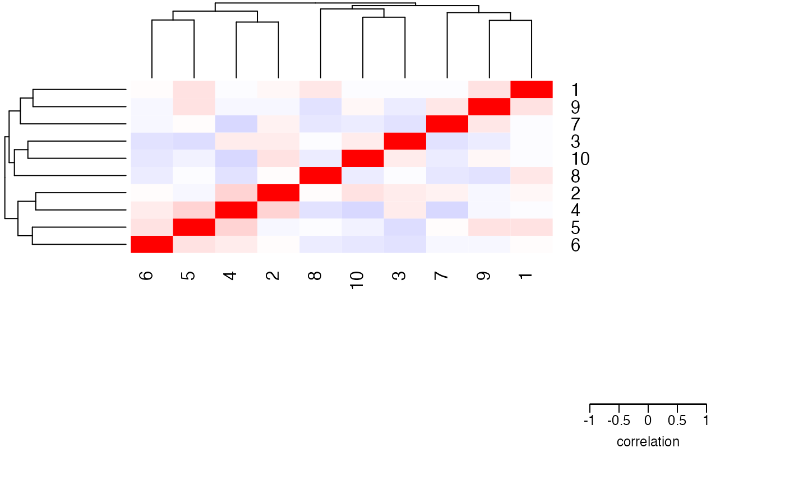
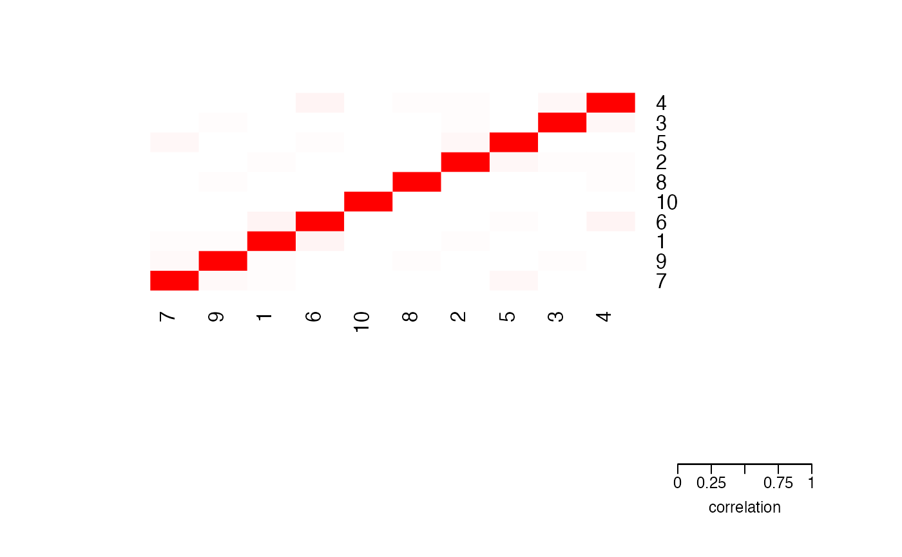

Usage
plotCorrMatrix(
C,
dendrogram = "both",
sort = TRUE,
margins = c(13, 13),
key.xlab = "correlation",
...
)
Arguments
- C
correlation matrix: R or R^2 matrix
- dendrogram
character string indicating whether to draw 'both' or none'
- sort
sort rows and columns based on clustering
- margins
spacing of plot
- key.xlab
label of color gradient
- ...
additional arguments to heatmap.2
Value
Image of correlation matrix
Details
Plots image of correlation matrix using customized call to heatmap.2
Examples
# simulate simple matrix of 10 variables
mat <- matrix(rnorm(1000), ncol = 10)
# compute correlation matrix
C <- cor(mat)
# plot correlations
plotCorrMatrix(C)

# plot squared correlations
plotCorrMatrix(C^2, dendrogram = "none")
